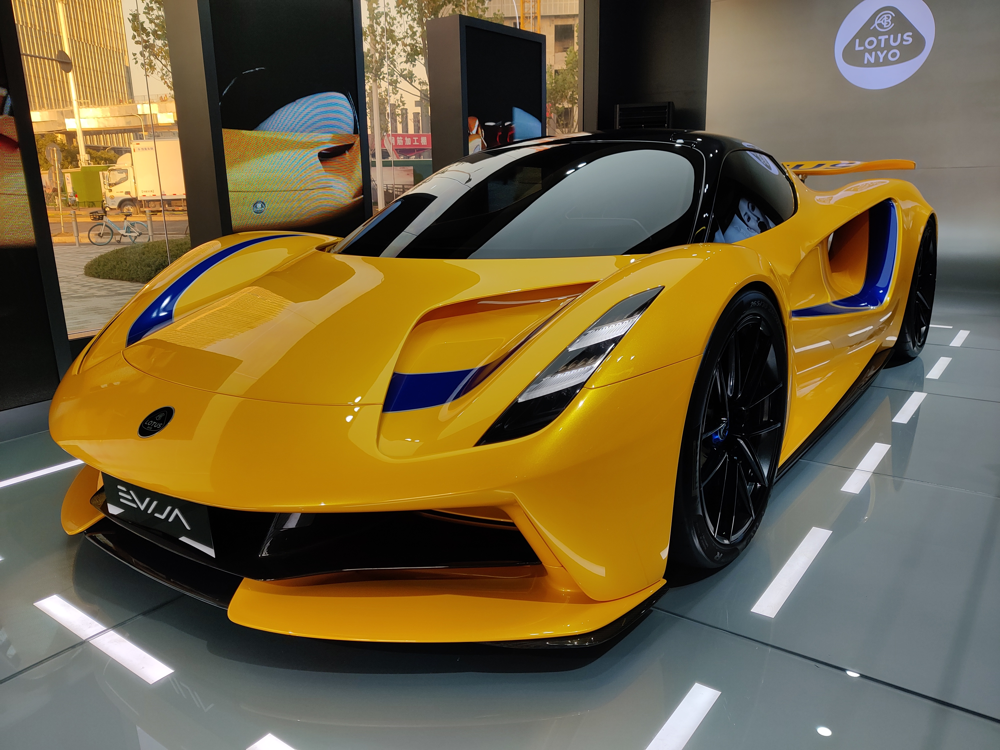

10 августа 2019 Начать надо с того, что это первая полностью электрическая машина Лотуса. И это не просто спорткар, это гиперкар мощностью 2000 л.с. и крутящим моментом - 1700 Нм. На каждом колесе стоит электромотор на полутысячу лошадиных сил. Начинку для машины поставляют те же компании, что строят электрические болиды Формулы Е. Литий-ионная батарейка, которая стоит на месте традиционного ДВС между передней и задней осью, не самая ёмкая - всего 70 кВт*ч, её охлаждают четыре радиатора, так что одного заряда должно хватить на 7 минут безбашенного метания по гоночному треку. А потом либо зарядка, либа быстрая смена аккумулятора. Зная Лотус, можно понять, почему они используют не очень-то ёмкую по меркам современных гиперкаров батарейку. Дело в весе. Аккумуляторы очень тяжелые, Evija и так стала самым тяжелым автомобилем марки - 1680 кг. И это при том, что кузов весит всего 129 кг. Короче говоря, лотусовцы наверняка хотели бы сделать машину легче и поставить туда пару аккумуляторов от смартфона, но тогда бы машины вряд ли протянула хоть один круг по гоночной трассе. Впрочем, если не гнать, как ужаленный, а ехать спокойно, аккумуляторов по теоретическим расчетам должно хватить на 400 км. Вообще лотусовцы прекрасно потрудились над аэродинамикой. Вместо зеркал крохотные камеры, сзади подъемный спойлер с изменяющимся углом атаки, а по бокам большие тоннели Вентури, которые создают за машиной зону пониженного давления. Что ещё крутого есть в машине? Ну, например, карбоно-керамические тормоза, клиренс всего в 105 мм, лазерно-люминофорные фары ближнего и дальнего света. Ну и цена, конечно. 1,7 млн фунтов стерлингов. Это где-то 135 млн рублей. Впрочем, первые машины появятся только в 2020 году и сначала у тех, кто уже внес депозит в размере 20 млн ₽. Ну а теперь, наверное, самое впечатляющее для подростков: Максималка 320 км/ч Разгон 0-100 км/ч менее, чем за 3 секунды Разгон 100-200 км/ч тоже быстрее трех секунд Разгон 0-300 км/ч примерно за 9 секунд, то есть быстрее, чем Солярис получит штраф за превышение скорости в городе. Как вам? Огонь - тачка? Ну и, возможно, главная новость для больших и богатых дяденек - после гиперкара Evija Lotus обещает заняться производством спорткаров попроще.
